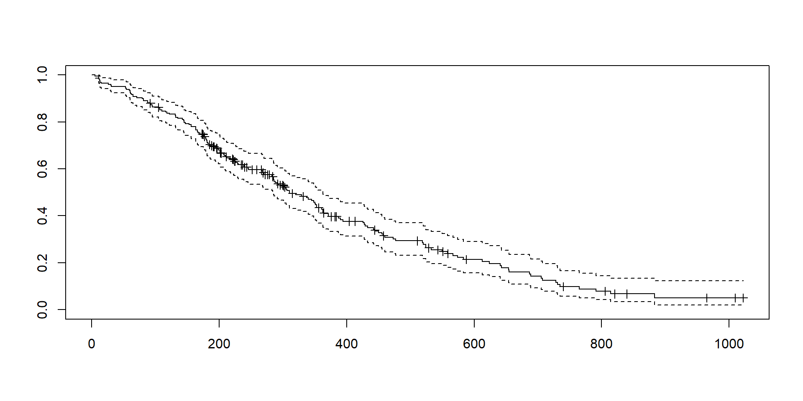
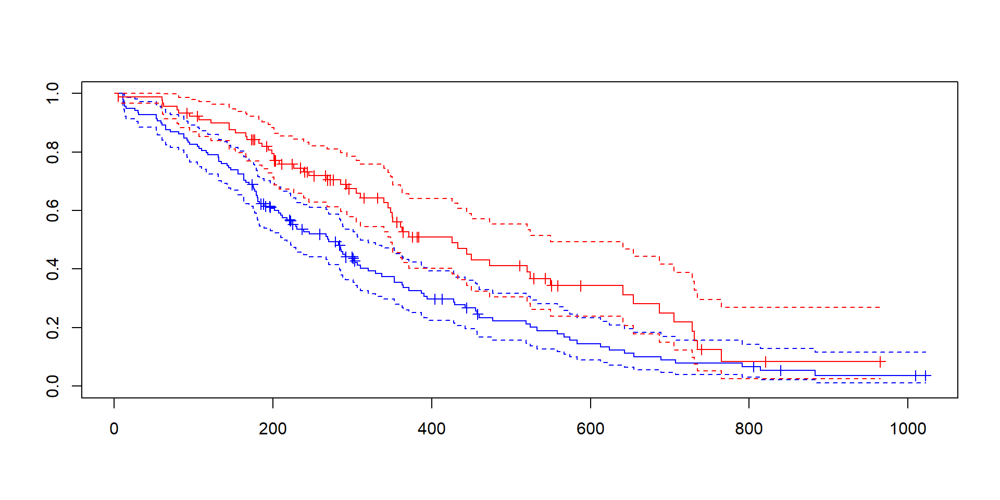

time status sex
1 306 2 1
2 455 2 1
3 1010 1 1
4 210 2 1
5 883 2 1
6 1022 1 1Overlevelsesanalyse
Hvad er det?
Generelt:
Fra vi starter med at observere et eller andet - hvornår indtræffer en hændelse?
Bruges til at undersøge patienters overlevelse.
Men også til:
- tilbagefald (recidiv)
- infektion
- udskrivelse
- hvornår virksomheder mister kunder
- hvornår en dims i en maskine fejler
Tid til hændelse!
Hvordan kan vi beskrive det?
- Vi skal vide hvornår hændelsen indtræffer
- Så vi skal kende et starttidspunkt
- Hvor mange patienter er i studiet på et givet tidspunkt?
- Det ændrer sig over tid!
På et givet tidspunkt har de patienter der er tilbage, en given risiko for at opleve hændelsen.
Det kalder vi for “hazard”:
\[h(t)\]
Hvad kan vi udlede af hazard?
Hvis vi kender hazard, ved vi hvor mange der (sandsynligvis) har oplevet hændelsen fra start til et bestemt tidspunkt.
Hvis hazard på både dag 1 og dag 2 er 0.1
Så kan vi regne ud hvor mange der oplevede hændelsen dag 1.
Der er så nogen tilbage. De har samme hazard for at opleve hændelsen dag 2.
Er der 100 fra start, er der 90 tilbage efter dag 1. Og efter dag 2 er der 81.
Det beskriver hvor mange der er hændelsesfri på et givet tidspunkt.
Det kalder vi overlevelsesfunktionen:
\[S(t)\]
Overlevelsesfunktionen
På et tidspunkt t har vi overlevelsen \(S(t)\).
Et infinitisemalt tidsrum senere er der indtruffet et antal hændelser. Overlevelsen er nu \(S'(t)\). Det er ændringen. Vi kan også beskrive det som hældningen af overlevelseskurven.
Den hazard der var, er derfor:
\[h(t) = -\frac{S'(t)}{S(t)}\]
Med lidt matematik kan vi så beregne \(S(t)\):
\[ S(t) = \exp\left(-\int_0^t h(u)\,du\right) \]
Kan vi bruge den til noget?
Jep!
Hvis altså vi kender hazard og den er konstant over tid. Så kan vi eksempelvis beregne 5-års overlevelsen:
\[ \begin{aligned} S(t) &= \exp\left(-\int_0^t h(u)\,du\right) \\ &= \exp\left(-h(u) \cdot \Delta_u \right ) \\ &= \exp \left(-0.1\cdot (5-0) \right) \\ &= \exp(-0.5) \\ &= 0.607 \end{aligned} \]
Starttidspunktet
Vi studerer “tid til hændelse”.
Hvis vi vil sammenligne den tid for to patienter, er vi nødt til at have et starttidspunkt (\(t = 0, t_0, T = 0\)).
Ellers er sammenligningen ubrugelig!
Hvorfor?
Det er ikke interessant at både patient A og patient B dør som 70-årige et antal år efter en operation.
Det interessante er hvor længe de overlever efter operationen.
Vi skal derfor have et starttidspunkt der er defineret på samme måde for begge patienter. Det skal være (i denne kontekst) klinisk relevant
Datoen for starttidspunkt på gerne være forskellig. Reglen for hvad starttidspunktet er, skal blot være ens.
Faldgruber
Vi lærer en del af hvor mange, der oplever hændelsen efter en bestemt tid.
Vi lærer mere hvis vi også inddrager de der ikke har haft hændelsen endnu (er hændelsesfrie)
Det introducerer muligheden for fejlkilder…
- Vi kan tabe kontakten til patienterne, og kender ikke status efter sidste kontakt.
- Patienten kan dø af noget andet end det vi undersøger.
- Studeres infektioner, kan patienten teste negativ efter tre uger, men positiv efter fem. Det faktiske tidspunkt for infektionen er ukendt.
- Patienten testede positiv allerede da studiet startede. Infektionstidspunkt er ukendt.
- Patienten er i live (hændelsesfri) ved studiets afslutning. Om eller hvornår hændelsen indtræffer er ukendt.
- Studiet foretages over mange år. Behandlingsformer og prognoser kan ændre sig. Nogen patienter bidrager derfor med en anden hazard end andre.
Hvad kalder vi det?
- Højrecensurering: Kontakten ophører mens patienten er hændelsesfri.
- Venstrecensurering: Positiv allerede ved første observation
- Intervalcensurering: Negativ test efter tre uger, positiv efter 5
- Konkurrerende hændelse: Patienten dør af anden årsag end det vi undersøger. Det vil vi behandle som en højrecensurering.
- Administrativ højrecensurering: Patienten er hændelsesfri ved studiets afslutning
- Informativ administrativ censurering: Behandling/prognose ændres sig over tid.
Informativ administrativ censurering - hvis patienterne har fælles slutdato, får de sidst inkluderede kortere opfølgning. Bedres prognosen samtidig, er der en sammenhæng mellem længden af opfølgning og overlevelse. Og så er den administrative censur ikke kun censur, men også information.
Vi skal altid forholde os til censuren!
Det er fristende at fjerne censurerede patienter fra analyse.
Men den højrecensurerede patient bidrager jo med information frem til tidspunktet for censuren!
Det kunne skyldes at vi sammenligner to behandlinger.
I den ene overlever (de fleste) patienter frem til studiet afsluttes. De bliver (administrativt) højrecensurerede.
I den anden dør de (de fleste) inden studiet slutter. De bliver ikke censureret.
Fjerner vi de censurerede patienter fra studiet, bliver vurderingen af overlevelsen skæv.
Vi antager noget!
Mere avancerede teknikker kan håndtere censur der er informativ. De simple modeller vi ser på her, antager at censuren ikke er informativ, mens administrativ censur i almindelighed er harmløs.
Det kan vi også formulere som at det, at en patient ikke er censureret, ikke må kunne bruges til at forudsige resultatet.
Hvis meget syge patienter forsvinder ud af opfølgning (højrecensureres), kan vores estimat for overlevelse blive for optimistisk.
Bedres prognosen over tid, og strækker studiet sig over flere år, kan administrativ censur være et problem
Med mindre vi kan inkludere tiden (periode) i analysen, så kan den være harmløs (og nyttig) igen.
En særlig bias
“Immortal time bias”
Vi undersøger overlevelsen efter en behandling, og sætter starttidspunktet til inklusion på venteliste.
Kun de patienter der overlever frem til de får behandlingen, kan få behandlingen. De er “garanteret” at de ikke dør før de får behandlingen. De er “udødelige”.
Helt kort:
Sammenligner vi en eksponeret gruppe med en ueksponeret gruppe.
Og kommer til at tælle tiden før eksponeringen som eksponeret tid.
Får den eksponerede gruppe en kunstig fordel.
Fordi de definitorisk har skulle være hændelsesfri i hele perioden indtil eksponeringen.
Hvad med competing risks?
Det er ikke pensum i SEMS, så det springer vi over.
Risikosæt
Eller: “antal i risiko” eller “antal under risiko”, “risikogruppen”, “risikopopulation”, “eksponerede”, “risk set”, “at risk”, “at risk group”. KBHMN.
De patienter, der stadig er under risiko for at opleve hændelsen på et bestemt tidspunkt.
Og altså hverken er har oplevet hændelsen (endnu), eller er blevet censurerede.
Det er det antal der skal ganges med hazard på et givet tidspunkt for at estimere hvor mange der kommer til at opleve hændelsen på det tidspunkt.
Hvordan udvikler det sig?
Er der flere eller færre patienter efter en hændelse?
Der er færre. En patient er død.
Risikosættet bliver derfor mindre.
Hvad når der sker censurering?
Så bliver risikosættet også mindre. Men de patienter der censureres efter et år, var stadig med i risikosættet indtil da.
Det betyder at en enkelt hændelse i slutningen af studiet kan give ret store fald i overlevelsen.
Sku vi ikke se noget data?
Når vi arbejder med overlevelsesanalyse, er standardpakken survival.
Er den ikke installeret, gøres det med: installl.packages("survival").
survival har medfølgende data, blandt andet overlevelse af patienter med fremskreden lungekræft. Vi betragter den relevante del af datasættet:
Mere komplext er data ikke.
Patient 1 var mand (sex = 1), og han døde (status = 2) efter 306 dages opfølgning (time).
Patient 3 var også mand, og blev højrecensureret (status = 1) efter 1010 dage, hvor han stadig var i live.
Kaplan-Meier
Et estimat af overlevelseskurven.

Vi kan godt give os i kast med at tælle og alsådden noget. Men det bliver I ikke bedt om for så skulle nogen finde ud af at distribuere data til jer til eksamen.
Hvad skete der der?
fit <- survfit(Surv(time, status == 2)~1, data = lung)
Surv(time, status == 2) laver et “survival objekt”. Det formatterer data, så funktionen Surv kan forstå dem.
Det er almindeligt at vi blot skriver det sådan. Fuldt udfoldet med argumentnavne bliver det:
Surv(time = time, event = status == 2)
Det ser således ud:
[1] 306 455 1010+ 210 883 1022+Patient 1 har hændelse efter 306 dage, patient 2 efter 455 dage, patient 3 er højrecensureret efter 1010, og var stadig i live.
survfit(Surv(time, status == 2)~1, data = lung) fitter det survival objekt Surv leverer.
Vi siger “som funktion af 1” med ~1: Dvs alle observationer medtages, der opdeles ikke efter noget. Vi skal specificere hvilket data vi arbejder på, med data = lung. Resultatet gemmer vi i objektet fit
Endelig plotter vi med plot(fit, mark.time = TRUE)
mark.time = TRUE specificerer at vi også plotter hvornår der er censureringshændelser. De vises ved lodrette streger i plottet.
Hvad skal vi kunne sige ud fra det?

Aflæse overlevelsen til en bestemt tid. Enheden på x er dage => ved 365 dage kan 1-års overlevelsen aflæses. Den estimeres til ca 41%
Aflæse medianoverlevelsen. Det er der hvor kurven passerer 50%. Det er ca. 310 dage.
Forklare trin og mærker. Kurven falder ved dødsfald (hændelse). Mærkerne (+) viser højrecensurering.
De højrecensurerede patienter bidrager med information, og er i risikosættet frem til mærket.
Forstå, at risikosættet bliver mindre for hvert fald i kurven. Og for hver censurering.
Og derfor, at overlevelsen efter 800 dage, baserer sig på ret få patienter.
Selve kurven viser den estimerede overlevelseskurve (S(t)).
De stiplede linier er 95% KI.
Hvorfor bliver det bredere over tid?
Fordi risikosættet bliver mindre. Fuldstændigt som da vi beregnede KI på proportioner!
Kan vi få mere data ud?
Ja, men det får I i givet fald som tabel, og skal ikke selv producere den:
time n.risk n.event n.censor surv cumhaz std.err std.chaz lower upper
1 5 228 1 0 0.9956140 0.004385965 0.004376336 0.004385965 0.9870734 1.0000000
2 11 227 3 0 0.9824561 0.017601824 0.008694643 0.008800928 0.9655619 0.9996460
3 12 224 1 0 0.9780702 0.022066110 0.009699183 0.009868444 0.9592437 0.9972662
4 13 223 2 0 0.9692982 0.031034720 0.011424650 0.011730480 0.9471630 0.9919508
5 15 221 1 0 0.9649123 0.035559606 0.012185800 0.012572938 0.9413217 0.9890941
6 26 220 1 0 0.9605263 0.040105061 0.012895585 0.013369365 0.9355811 0.9861367Til opfølgningstidspunktet = 5:
var der n.risk = 228 i risikosættet.
Der indtræder n.event= 1 event.
n.censor = 0 er blevet censureret på det tidspunkt.
Overlevelsen (surv) er derefter på 99.6%.
Den kumulerede hazard (cumhaz) patienterne er blevet udsat for er 0.44%.
std.err er standardfejlen på surv
std.chaz er standardfejlen på cumhaz
lower/upper er nedre og øvre grænser for et 95% KI for surv.
Er der forskel på kønnene?
Vi laver et Kaplan-Meier estimat af overlevelsen som funktion af køn, og plotter.

Det vil her være nyttigt at få at vide at mænd er blå og kvinder røde.
Hvad kan vi se af det?

Vi skal kunne læse det samme som før.
Men nu er den estimerede 1-års overlevelse forskellig mellem de to køn.
Mænd ca. 34%, kvinder ca. 53%.
Det kan vi også udtrykke som at kvinders estimerede 1-års overlevelse er ca. 19 procentpoint højere.
Og nej, det kan vi ikke meningsfyldt på denne graf…
Medianoverlevelsen er også forskellig, 270 vs 426 dage for mænd hhv kvinder.
Vi kan se at kvinders overlevelseskurve er højere end mænds gennem næsten hele opfølgningen.
Kan vi konkludere at der er forskel?
Nope. Der skal være meget tydelig (MEGET) forskel på de to kurver for at vi kan det grafisk. Overlappet mellem KI’er fortæller os også at det er noget snask.
Kan vi få mere at vide?
Ja. men ikke meget

Der tilføjes hvor mange der er “i risiko” for de to køn.
Hvis I selv skal
Faldgruber ved Kaplan-Meier
- Medianen bruger kun et punkt på kurven.
- To kurver kan have samme median og være meget forskellige.
- Hvis kurven aldrig kommer under 0.5, kan medianen ikke estimeres.
Hvad er KM god til?
- deskriptiv beskrivelse af survival (overlevelsesfunktionen) over tid
- visualisering af censur og størrelsen af risikosættet.
- enkel sammenligning af to (eller flere) grupper
Hvad kan KM ikke?
- justere for andre parametre
- Håndtere forklarende (kontinuærte) variable
- estimere hvad forskellen i hazard er for de to (eller flere) grupper (andet end punktvis)
Hvordan ser vi så forskel?
Det findes der en statistisk test til: log-rank test.
Vi genbruger vores data fra før, hvor vi estimerede overlevelseskurverne for de to køn:
Call:
survdiff(formula = Surv(time, status == 2) ~ sex, data = lung)
N Observed Expected (O-E)^2/E (O-E)^2/V
sex=1 138 112 91.6 4.55 10.3
sex=2 90 53 73.4 5.68 10.3
Chisq= 10.3 on 1 degrees of freedom, p= 0.001 Nu er det ikke survfit, men survdiff!
Hvad skal vi kunne læse af det?
Der var 138 mænd i studiet. Vi observerede 112 dødsfald blandt dem. Der var 90 kvinder i studiet. Blandt dem observerede vi 53 dødsfald.
For hvert punkt i datasættet, beregnes det forventede antal dødsfald for mænd og kvinder, under antagelse af at hazard er ens for de to grupper. Det samlede, kumulerede antal dødsfald for mænd, hhv kvinder er 91.6 og 73.4
Teknikken kan forstås som en art kumuleret chi^2 test. Og derfor en chisq værdi. Den giver en p-værdi på 0.001.
Derfor forkaster vi null-hypotesen på et 5% niveau. Der er statistisk evidens for en forskel i overlevelsen mellem mænd og kvinder.
Mændene havde flere dødsfald end forventet under null-hypotesen. Kvinderne færre. Det matcher KM-kurverne, hvor kvinderne har en højere estimeret overlevelse gennem næsten hele opfølgningen.
Der justeres ikke for noget i sammenligningen.
Styrker
- Bruger hele kurven/datasættet, ikke kun medianen eller 1-års overlevelsen.
- Tager højde for censurering (Husk - patienter bidrager med information indtil de censureres)
- Den standardmetode der bruges ude i den virkelige verden.
Svagheder
- Giver evidens mod null-hypotesen (hvis altså den gør)
- Siger intet om effektstørrelse
- Baseres på antagelse om proportional hazard
Hvad var proportional hazard?
- Hazard var den risiko en gruppe under risiko havde for at opleve hændelsen.
- I følge jeres undervisning:
- Den øjeblikkelige event-rate omkrint tid t blandt dem, der stadig er event-frie lige før t.
- Det er altid til et bestemt punkt. Og vi har mere end en gruppe.
- Fænomenet proportional hazard udtrykker at der er en proportionalitet mellem to hazard kurver, to grupper.
- Hvis hazard for den ene gruppe fordobles fra uge 1 til uge 7. Så fordobles hazard for den anden gruppe også (fra uge 1 til uge 7).
- Den faktiske hazard kan godt ændre sig undervejs. Men så ændrer den sig for begge grupper.
Hazard ratio
Og det er det forhold vi er på jagt efter når vi vil se forskel på to grupper. Hvad er hazard ratio (HR) mellem to grupper:
\[HR = \frac{h_{kvinder}}{h_{mænd}}\]
Det er den vi antager er konstant over tid.
Hvis HR er ca 0.20, så er der ca. 20% lavere hazard for kvinder som der er for mænd.
Det fortæller intet om medianoverlevelsen. Eller den relative risiko grupperne imellem til et bestemt tidspunkt.
Hvordan finder vi så den?
Kaplan-Meier estimerer survival - evt som funktion af en eller flere kategoriske variable.
Cox proportional hazards modellen estimerer hazard - som funktion af en eller flere variable.
Den antager at der eksisterer en baseline hazard, som kan stige, eller falde, som funktion af forklarende variable.
\[ h(t | X) = h_0(t)\exp(\beta_1x_1 + \beta_2x_2 + ... + \beta_kx_k ) \]
Hvis man tager logaritmen på begge sider - så begynder det at ligne noget lineært:
\[\ln(h(t)) = \alpha(t) + \beta_1 x_1 + \beta_2 x_2 + \dots + \beta_k x_k \]
Det behøver vi ikke bruge tid på - men der er (som sædvanligt) - en lidt dybere sammenhæng mellem tingene…
I praksis
Vi ser stadig på lungekræft. KM antydede forskellig dødelighed for de to køn.
Cox modellen siger at
\[ h(t) = h_0(t)\exp(\beta\cdot\text{køn}) \] Her mænd baseline, med værdien 0.
Exponential leddet bliver da 1 for mænd (\(\exp(\beta \cdot 0) = 1\)), og \(\exp(\beta)\) for kvinder.
Hazard ratio bliver så:
\[HR = \frac{h_0(t)\exp(\beta)}{h_0(t)} = \exp(\beta)\]
Hvad der ender som baseline afhænger af hvordan vi har kodet den kategoriske værdi køn.
Og i praksis
Call:
coxph(formula = Surv(time, status == 2) ~ factor(sex), data = lung)
n= 228, number of events= 165
coef exp(coef) se(coef) z Pr(>|z|)
factor(sex)2 -0.5310 0.5880 0.1672 -3.176 0.00149 **
---
Signif. codes: 0 '***' 0.001 '**' 0.01 '*' 0.05 '.' 0.1 ' ' 1
exp(coef) exp(-coef) lower .95 upper .95
factor(sex)2 0.588 1.701 0.4237 0.816
Concordance= 0.579 (se = 0.021 )
Likelihood ratio test= 10.63 on 1 df, p=0.001
Wald test = 10.09 on 1 df, p=0.001
Score (logrank) test = 10.33 on 1 df, p=0.001Hvad kan vi læse af det?
228 patienter. 165 hændelser (død). Resten er højre censurerede. Vi ved at mænd er kodet som 1 - de er referencegruppen. factor(sex)2 sammenligner kvinder med mænd.
Blandt patienter, der stadig er i live på samme tidspunkt i opfølgningen, er kvindernes estimerede øjeblikkelige dødsrate cirka 41 % lavere end mændenes. Eller ca. 0.588 gange mændenes.
\(\beta\) er -0.5310. Det var koefficienten, der gav os HR ved at tage exp til den.
\(\exp(-0.5310) = 0.588\) og \(1 - 0.588 = 0.412\)
\(\exp(-\text{coef})\) giver den ækvivalente - mændenes dødsrate relativt til kvindernes:
\(\exp(- -0.5310) = 1.701\)
Altså ca 70% højere.
p-værdien tester som sædvanlig om vi kan afvise null-hypotesen at coef er 0.
KI:
Korrigeret for
Eller - “multipel regression”
Hvad nu hvis det ikke kun er køn, men også alder der påvirker overlevelseskurven? Eller forskellig dosis af medicin? Eller forskellige typer af implantater?
Cox-regressionen tillader os - fuldstændig som vi har set med andre regressioner, at have mere end en forklarende variabel:
Call:
coxph(formula = Surv(time, status == 2) ~ factor(sex) + age,
data = lung)
n= 228, number of events= 165
coef exp(coef) se(coef) z Pr(>|z|)
factor(sex)2 -0.513219 0.598566 0.167458 -3.065 0.00218 **
age 0.017045 1.017191 0.009223 1.848 0.06459 .
---
Signif. codes: 0 '***' 0.001 '**' 0.01 '*' 0.05 '.' 0.1 ' ' 1
exp(coef) exp(-coef) lower .95 upper .95
factor(sex)2 0.5986 1.6707 0.4311 0.8311
age 1.0172 0.9831 0.9990 1.0357
Concordance= 0.603 (se = 0.025 )
Likelihood ratio test= 14.12 on 2 df, p=9e-04
Wald test = 13.47 on 2 df, p=0.001
Score (logrank) test = 13.72 on 2 df, p=0.001Hvordan læser vi det?
Call:
coxph(formula = Surv(time, status == 2) ~ factor(sex) + age,
data = lung)
n= 228, number of events= 165
coef exp(coef) se(coef) z Pr(>|z|)
factor(sex)2 -0.513219 0.598566 0.167458 -3.065 0.00218 **
age 0.017045 1.017191 0.009223 1.848 0.06459 .
---
Signif. codes: 0 '***' 0.001 '**' 0.01 '*' 0.05 '.' 0.1 ' ' 1
exp(coef) exp(-coef) lower .95 upper .95
factor(sex)2 0.5986 1.6707 0.4311 0.8311
age 1.0172 0.9831 0.9990 1.0357
Concordance= 0.603 (se = 0.025 )
Likelihood ratio test= 14.12 on 2 df, p=9e-04
Wald test = 13.47 on 2 df, p=0.001
Score (logrank) test = 13.72 on 2 df, p=0.001Fortsat 228 patienter fra start
165 events (død)
Resten højre censurerede.
Kvinders hazard er 0.599 gange mændenes - svarende til 1 - 0.599 = 40.1% lavere dødsrate
Mændenes er tilsvarende ca. 67% højere (exp(-coef)).
Begge justeret eller korrigeret for alder. Så: Ved samme alder.
exp(coef) for age er 1.0172, eller ca. 1.7% højere for den et år ældre patient
Er forskellen 10 år, skal vi beregne hvor meget højere den øjeblikke dødsrate (hazard) er ved:
Altså en ca. 18.5% højere dødsrate ved en 10 års aldersforskel
Men! Hvad er p-værdien for age koefficienten?
Concordance fortæller os hvor god modellen er. Den stiger fra 0.579 til 0.603. Modellen rangerer sammenlignelige patientpar lidt bedre end når alder ikke medtages i modellen. Man kan tænke på den som \(R^2\) fra den lineære regression, men her er det et mål for hvor godt Cox-modellen får rangeret sammenlignelige patientpar.
De tre nederste tests tester om begge koefficienter er 0.
Styrker
- Tager højde for censurering
- Tillader flere forklarende variable
- Kan laves uden at kende hazard-funktionen
- Den alle bruger
Svagheder
Cox-regressionen antager proportional hazard (der er kun en simpel faktor til forskel)
Det kan være tvivlsomt hvis
- KM-kurverne krydser er antagelsen om proportional hazard være tvivlsom
- der er tydeligt forsinket effekt af behandling er PH også tvivlsom
- der er grund til at tro at effekten af behandling ændres over tid
Faldgruber
Hazard Ratio er:
- en ratio, ikke en risiko
- forskellig fra forskel i median overlevelsen
- svær at fortolke klinisk
- ikke kausalt enkel.
- ikke en behandlingseffekt
En opgave
Vi følger patienter med svær hjertesygdom over tid, fra de blev inkluderet på venteliste - for at få en hjertetransplantation.
Nogle patienter modtog under opfølgning en transplantation.
Endepunktet er tid til død, fra inklusion i studiet.
Vi har følgende variable i datasættet:
futime: Opfølgningstid fra patienten blev inkluderet på venteliste til død eller lost to follow-up.fustat: Event-indikator (1 = død, 0 = censureret)transplant: Indikator for om patienten har fået transplantation (1 = ja, 0 = nej)wait.time: Tid til transplantationsurgery: Indikator for tidligere kirurgi (bypass operation) foretaget før inklusion i studiet.
De første seks datalinjer
| fustat | futime | wait.time | transplant | surgery | |
|---|---|---|---|---|---|
| 1 | 1 | 49 | NA | 0 | 0 |
| 2 | 1 | 5 | NA | 0 | 0 |
| 3 | 1 | 15 | 0 | 1 | 0 |
| 4 | 1 | 38 | 35 | 1 | 0 |
| 5 | 1 | 17 | NA | 0 | 0 |
| 6 | 1 | 2 | NA | 0 | 0 |
Opgave fortsat
Følgende analyse laves:
| N | Observed | Expected | (O-E)^2/E | (O-E)^2/V | |
|---|---|---|---|---|---|
| factor(surgery)=0 | 87 | 66 | 58.6 | 0.938 | 4.44 |
| factor(surgery)=1 | 16 | 9 | 16.4 | 3.348 | 4.44 |
Chisq= 4.4 on 1 degrees of freedom, p= 0.04
Hvilken analyse? Hvad kan vi konkludere?
log-rank test (survdiff)
Dvs en sammenligning af de estimerede overlevelseskurver mellem patienter der tidligere har fået kirurgi, og de der ikke har. (factor(surgery))
Hvad er null-hypotesen?
Det er, at der ikke er forskel på de to grupper.
p-værdien er 0.04, derfor?
Vi forkaster null-hypotesen på et 5% niveau. Der er dermed evidens for at der er forskel i overlevelse mellem patienter der tidligere har fået kirurgi, og patienter der ikke har.
Gruppen uden tidligere kirurgi (surgery = 0) har flere dødsfald end forventet. Gruppen med tidligere kirurgi færre.
Det antyder?
At der er bedre overlevelse blandt patienter med tidligere kirurgi.
Opgave fortsat 2
Nu blev følgende analyse udført med tilhørende udskrift:
n= 103, number of events= 75
| coef | exp(coef) | se(coef) | z | Pr(>|z|) | |
|---|---|---|---|---|---|
| factor(transplant)1 | -1.3234 | 0.2662 | 0.2438 | -5.428 | 5.69e-08 *** |
Hvilken analyse? Fortolk resulatet. Vurder kritisk om analysen er korrekt i denne sammenhæng. Hvis ikke, beskriv problemet og hvordan det påvirker konklusionen. (så… Mon ikke der er et problem?)
Cox-regression (coxph) med transplant som forklarende variabel
noget
Punktnoter til fordeling
Samme femårsoverlevelse kan dække over meget forskellige forløb. Tjek først, hvad hændelsen er, hvor tiden starter, og hvilken enhed den måles i. Kurvens højde ved et givet tidspunkt er den estimerede sandsynlighed for stadig at være hændelsesfri. Kurven falder ved observerede hændelser og ligger fladt imellem dem. En censureringsstreg viser, hvor længe en deltager bidrog med opfølgning. Frafald kan skævvride kurven, hvis det hænger sammen med deltagernes prognose. En lang, flad hale kan bygge på ganske få deltagere. Tjek number at risk. Når få er i risiko, kan én hændelse give et stort fald. Den lodrette afstand mellem to kurver ved samme tidspunkt er en forskel i procentpoint. Krydsende kurver giver grund til at undersøge, om hazardforholdet ændrer sig over tid. Medianen aflæses dér, hvor kurven når eller passerer 50 %. »Median ikke nået« kan også skyldes kort opfølgning. Log-rank-testen sammenligner de samlede overlevelsesforløb. Ved proportionale hazards betyder HR = 0,70 en 30 % lavere øjeblikkelig hændelsesrate blandt dem, der stadig er hændelsesfri. En lille p-værdi kan sagtens ledsage en klinisk beskeden forskel.